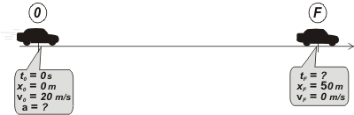
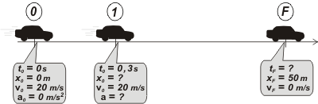
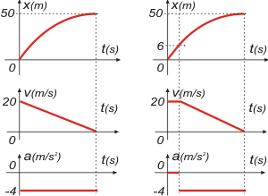

NO ME SALEN
PROBLEMAS RESUELTOS DE FÍSICA DEL CBC
(Movimiento uniformemente variado)
|
|

|
| |
FIS c3.11 - Un auto viaja por una ruta a 20 m/s cuando
observa un obstáculo delante de él a 50 m.
a) ¿Cómo deben ser los sentidos de los vectores
aceleración y velocidad para que el auto
frene?
b) ¿Cuál es la desaceleración mínima que debe
imprimirse al automóvil para no chocar con el
obstáculo?
c) Idem que (b) teniendo en cuenta que el
tiempo de respuesta del chofer es 0,3 segundos.
d) Muestre la situación calculada en (b) y (c) en
un gráfico posición vs. tiempo. |
|
| Arranquemos, como es mi costumbre, con un esquema suponiendo de antemano que el auto se frena justo antes del obstáculo, por lo cual, lo hizo con la aceleración mínima: |
|
|
|  |
|
|
Como ves, está elegido el SR, y mirando el globito que acompaña al auto en el evento 0, es muy fácil armar las ecuaciones horarias. Tengamos los modelos a la vista:
x = xo + vo ( t – to ) + ½ a ( t – to )²
v = vo + a ( t – to )
Y reemplacemos las constantes por las de nuestro autito:
x = 20 m/s t + ½ a t²
v = 20 m/s + a t
Ahora le pedimos a esas dos ecuaciones que hablen exclusivmente del punto F.
50 m = 20 m/s tF + ½ a tF²
0 m/s = 20 m/s + a tF
Si lo mirás con cariño te das cuenta de que tenés dos ecuaciones con dos incógnitas sencillas de encontrar. Yo te o hago, no llores. De la segunda despejamos tF :
tF = – 20 m/s / a
Eso lo metés en la primera (no arrugues: vos podés saber cómo lo hice):
50 m = – ½ (20 m/s)² / a
De donde a vale: |
|
| te escribí las variables en azul... si pescás eso es un golazo |
|
|
|
|
Ese signo negativo de la aceleración nos indica -entre otras cosas- que el vector velocididad y el vector aceleración son opuestos. Si calculás tF te da: tF = 5 s
Vamos al caso de chofer más real, que tarda un cierto tiempo en reaccionar. |
|
|
|  |
|
|
Espero que te cierre. En 0 ve el obstáculo y le ordena a su pie apretar el freno. El pie se levanta del acelerador, se corre hacia el freno y apreta. Todo ese proceso duró 0,3 segundos. Durante ese tiempo el automóvil marcha a velocidad constante, recién en 1 comienza a frenarse.
Se agrega un movimiento más, MRU, ahora serán 3 ecuaciones:
x = 20 m/s t
x = x1 + 20 m/s ( t – 0,3 s ) + ½ a' ( t – 0,3 s )²
v = 20 m/s + a' ( t – 0,3 s )
A la primera le pedimos que hable de 1 (el único lugar donde puede decir algo interesante). Y a las otras dos les pedimos que hablen de F.
x1 = 20 m/s . 0,3 s
50 m = x1 + 20 m/s ( tF' – 0,3 s ) + ½ a' ( tF' – 0,3 s )²
0 m = 20 m/s + a' ( tF' – 0,3 s )
Bueno, tenemos 3 ecuaciones y 3 incógntas. Acá terminó la física.
De la primera:
x1 = 6 m
De la tercera:
a' = – 20 m/s / ( tF' – 0,3 s )
Metemos esas cosas en la segunda:
50 m = 6 m + 20 m/s ( tF' – 0,3 s ) – 10 m/s ( tF' – 0,3 s )
44 m = 10 m/s ( tF' – 0,3 s )
4,4 s = tF' – 0,3 s
tF' = 4,7 s
De donde: |
|
| te escribí las variables en azul... si pescás eso es un golazo |
| date cuenta de que ni x1, ni tF', ni a' son variables; son incógnitas, pero no dejan de ser constantes. |
|
|
|
|
| Como ves, perder 0,3 segundos en reaccionar, te obliga a frenar con mayor aceleración (en módulo), o sea una frenada más brusca para no estrolarte. Vamos a los gráficos: |
|
|
|  |
Acá tenés los gráfico, no están hechos a escala porque preferí que sean más visibles las características importantes.
Pero al menos están hechos en tándem, como corresponde, para que, justamente, puedas apreciar las caracterísiticas importantes.
Que los aproveches y disfrutes. |
|
|
|
| |
|
|
Desafío: ¿Necesariamente la aceleración debe ser constante? |
|
 |
| |
|
| Algunos derechos reservados.
Se prohibe estrictamente leer este ejercicio resuelto por encima: hay que leerlo despacio y con atención. Las penalizaciones a esta infracción son severísimas. Se permite su reproducción citando la fuente. Última actualización mar-16. Buenos Aires, Argentina. |
|
|
| |
|